Overview
A new technique has recently been developed for the Occlusion System in CRYENGINE.
The previous version was based on a per-object occlusion test, however in the push for greater optimization and better frame rates we have developed a new system that further complements the existing system by including a static Occlusion Mesh.
CVars
To see which version of the Occlusion System is running (default=6) the CVar below is used to return one of three values (the value selected tells the ENGINE which occlusion method to use).
e_CoverageBufferReproj = 2/4/6
To investigate what is inside the Coverage Buffer (CBuffer) enable the debug view using the CVar below. This opens a small Viewport in the Sandbox Editor or the Launcher (screenshot below) that shows information relating to the Occlusion System.
e_CoverageBufferDebug = 0/1
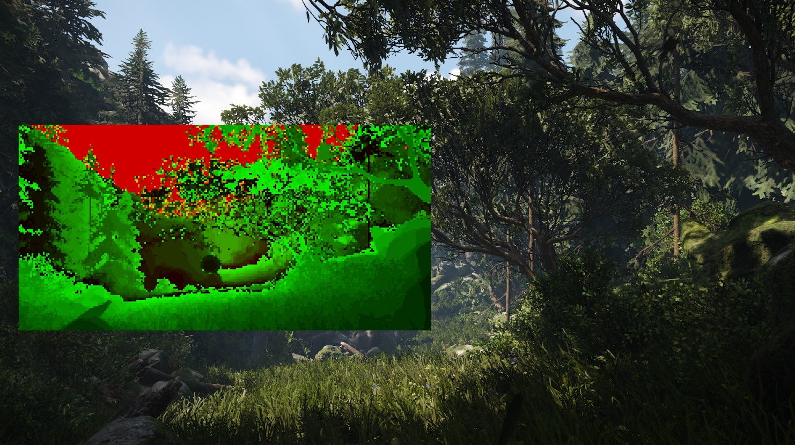
Screenshot above is the debug view in action (standing from the first spawn point in the Woodland level).
Brief History
- e_CoverageBufferReproj=2 The Crysis Series only used the 'per-object' Occlusion System
- e_CoverageBufferReproj=4 During the production of Ryse a standalone section of the Level Occlusion mesh (OCM) was used
- e_CoverageBufferReproj=6 For the shipped game Ryse both methods of occlusion were unified into one system. (default Occlusion System for CRYENGINE 3.6+)
It is still possible to preview the different occlusion methods by changing the CVar e_CoverageBufferReproj accordingly.
e_CoverageBufferReproj=2 (per-object test only)
e_CoverageBufferReproj=4 (Level Occlusion Mesh (OCM) only)
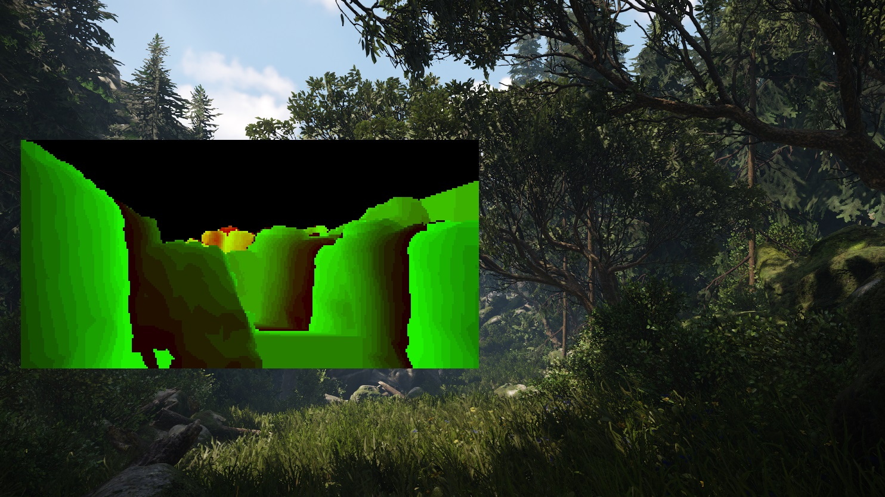
e_CoverageBufferReproj=6 (CRYENGINE 3.6+ default method, Level Occlusion Mesh (OCM) and per-object test combined)

How to Create & Export the Level Occlusion Mesh (OCM)
Since the Level Occlusion Mesh isn't automatically generated it has to be created manually. So to add items to the Level Occlusion Mesh "flag" the object (s) in question. This is achieved by selecting the object (s) and from inside their params to check the checkbox for the Occluder.
You can only add static geometry to the Level Occlusion Mesh for e.g. Brushes and Designer Objects.
Adding Objects to the Level Occlusion Mesh
Brush
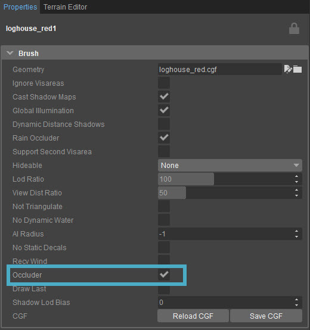
Designer Object
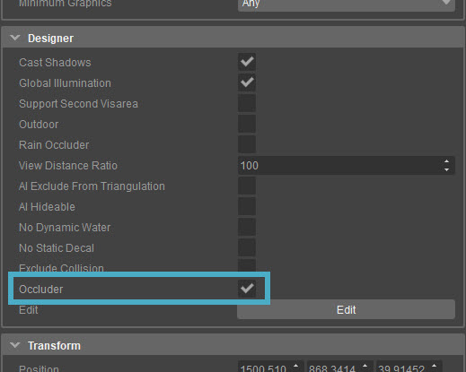
Exporting the Occlusion Mesh
Once you have flagged the object (s) that you want to be part of the Level Occlusion Mesh, you then have to generate the mesh.
Go to the File -> Export Occlusion Mesh.
This will open the save as dialog box shown below.
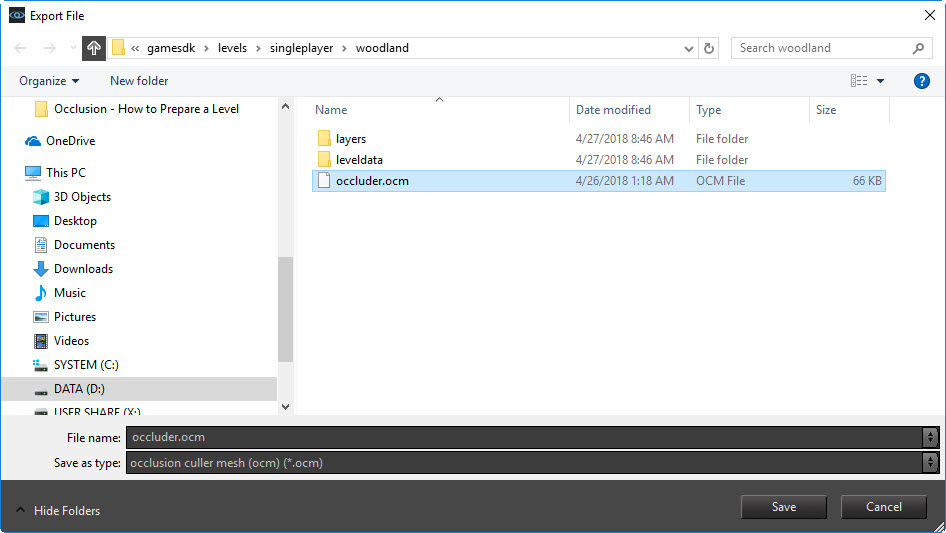
Once the above steps have been followed, click Save, this will then generate the Level Occluder Mesh.
Finally, check your level directory in your build folder to confirm that you have saved the Level Occlusion Mesh in the correct place. (it should look like the save as dialogue box screenshot shown above).
Optimizing the Level Occlusion Mesh (OCM)
We have covered how to add an object (s) into the Level Occluder Mesh. To recap, only static objects can be added to the Level Occlusion Mesh, hence the Occluder flag (in the objects properties) is only available for static objects.
Also, not every brush should be used as part of the OCM. The objects that you want to be adding should be large blocking types, things such as large rocks, buildings etc, i.e. objects that are going to interrupt a players view in a particular direction. So;
- Avoid adding small objects to the OCM. If an object is too small it can only "occlude" objects behind it, i.e. that are going to be smaller than itself. So don't make the Occlusion System have to do extra work on things it cannot do anything with
- Avoid adding overly complex geometry (high poly). The point of the Level Occlusion Mesh System, is to quickly and efficiently stop drawing anything beyond an object from the players point of view. If the object is too complex, then the Occlusion System has to work and test against all these extra faces
To continue, we will use the Woodland level as an example.
You should be inside the level at the start point (Shift F1 to jump to the location). To help visualize the OCM, we will set the Occlusion System to method 4 using the CVar
e_CoverageBufferReproj=4
Enable the debug view using
e_CoverageBufferDebug=1
This now shows us the OCM in the debug Viewport. This is what we are trying to configure when we add brushes and designer objects to the mesh via the Occluder flag in the object (s) properties.
While optimizing the OCM, it is a good idea to disable the vegetation using the CVar e_vegetation=0 (default=1) or to uncheck the relevant box in the rollup bar.
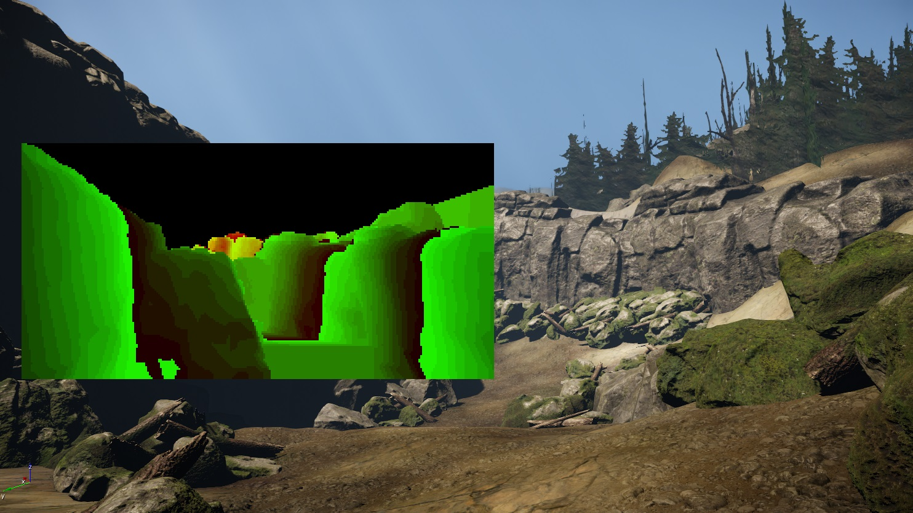
Straight away you can see that the terrain isn't part of the OCM and that only the large cliff elements have been added to the OCM - the smaller rock groups located on the ground have not been added. This is where your judgement comes into play. Ask yourself, "is the object big enough to actually 'hide' something behind it"? If it's not then do not include it in the OCM.
First Pass of the Level Occlusion
Inside the Woodland level, go to the Level Explorer and disable all layers except Level_Occ_Mesh and lighting. This will show the first pass of the Occlusion setup of the level. It consists of many Designer Objects placed where the actual "cliff pieces" are positioned (be aware this is only for those objects where the Occluder flag has been checked in the object (s) properties).
The layers properties (Level_Occ_Mesh) has been set to not export to game (note the big X by the layers name). This is why these objects are not visible when run in the Launcher (but are visible in the Editor).
Why keep this layer? To show the user what has been set as part of the Occlusion Mesh - the basic block-out.
In the original versions of the OCM (pre CRYENGINE 3.6+) designer objects were part of the mesh and not part of the cliff brushes. Once the level layout has been confirmed we committed the actual cliff brushes to the layer as well. (You won't be able to follow the next two screenshots unless you regenerate the OCM without the brushes added. The screenshots are included to explain why this layer exists.
Simple Occluder setup with designer objects and terrain.
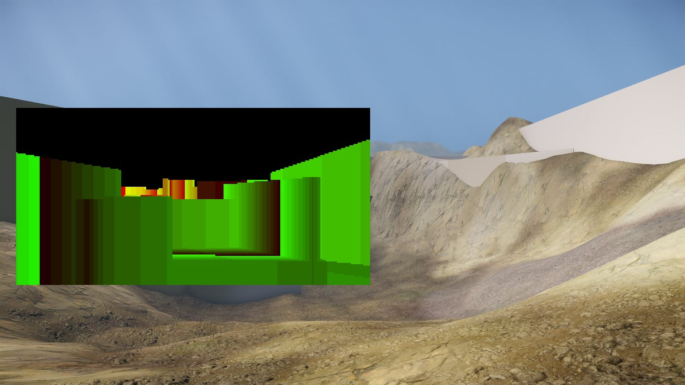
Simple Occluder setup without terrain.
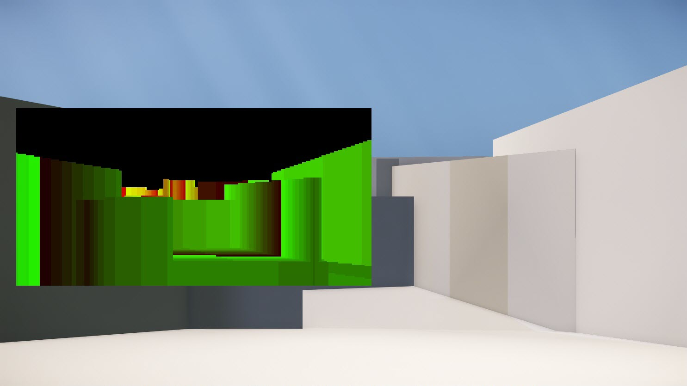
Once the layout of the level has been confirmed, the true level geometry (cliff pieces) have been added to the OCM and the mesh regenerated through the file menu\Export Occlusion Mesh process.
Final Occlusion Mesh with brushes and designer objects.
Possible Problems You Can Encounter
Not Updating the OCM Mesh
The following 2 screenshots show an example of where not updating the Level Occluder Mesh will cause rendering artifacts.
Just down the hill from the start point in the Woodland level there is a sharp left towards a hut. In the first picture we have the wall piece in place (set as an Occluder) and everything is fine. In the second picture we have moved the cliff piece to a new location, but we have not updated the OCM via export. What you see in the 2nd screenshot is the Occlusion System blocking the rendering of any further objects beyond where this wall piece used to exist. Hence, there is an empty space and the skybox.
Note that in the debug view the rock still exists in the OCM - that's why the world isn't being registered beyond that brush.
To fix this, regenerate the OCM - it will then update the OCM to NOT include this object.
Object in the world and included in the Level Occluder Mesh (OCM).
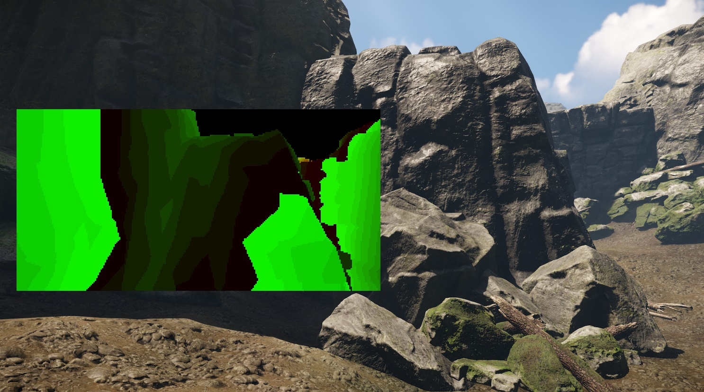
Object NOT in the world but IS included in the Level Occluder Mesh (OCM). Re-export to fix.
Notice the empty space that would be behind the rock and occluded. This is the Occlusion System working.
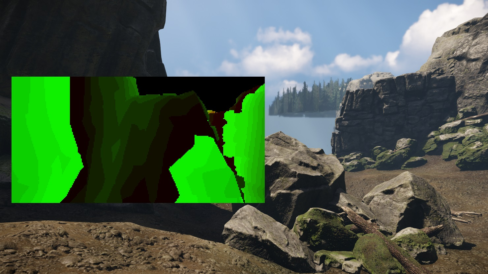
A final screenshot to highlight the difference between the 2 images. Where the OCM thinks there is some geometry.
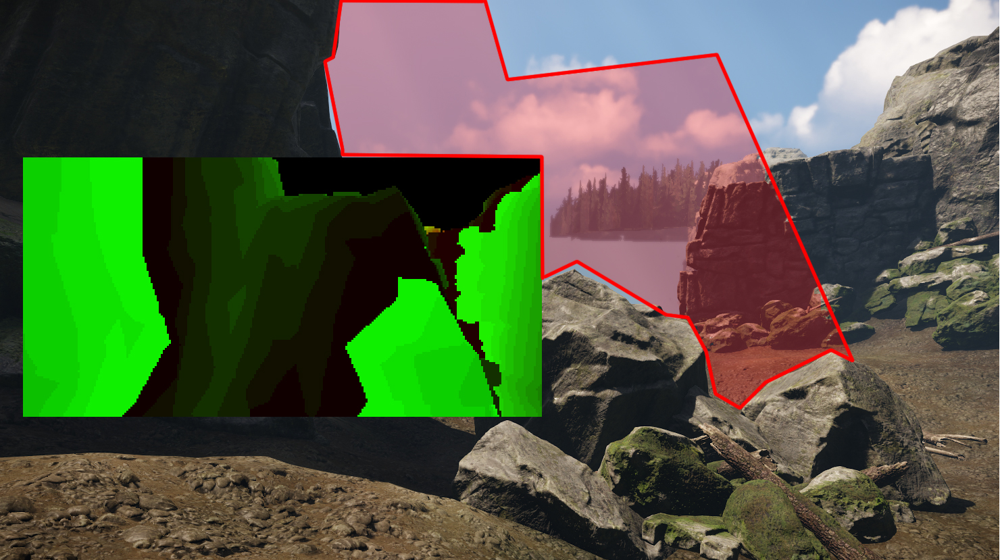
Testing the Level Occlusion Mesh
Testing the OCM is best done in re-projection method 4 (e_CoverageBufferReproj=4) this way you are only visualizing the OCM and not the per-object test as well.
If there is a piece of geometry in the way, then it is hard to tell if something is being occluded or not With the r_displayinfo in the top right corner of the screen, the section for Drawcalls (DP) will adjust as you pass behind an Occluder, hence the DP's should go down.
Another handy tip to see if objects are being occluded is to enable the CVar r_stats=6
This debug mode outputs information relating to how many drawcalls each object has. Although this is not for its intended usage it can be used because it renders the debug text through objects.
- So if the object is visible to the ENGINE the debug info will be drawn
- If the object is being occluded correctly the debug text will also be occluded or not drawn
Screenshot 1 below: represents the camera passing from behind an Occluder. Screenshot 2: the 1/2 way step from behind the Occluder out into the open and screenshot 3: a view of the full scene.
Note: with the debug text active you can see which brushes are considered active and when they drop from the scene.
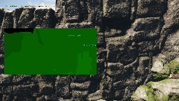 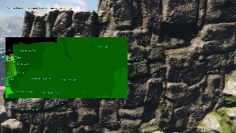 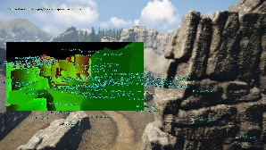
Once you have finished inspecting your OCM through this debug view make sure to re-enable the full Occlusion System with CVar e_CoverageBufferReproj=6
Note: we only reset to version 4 to investigate the Level Occlusion Mesh on its own.
Notes
- Any modifications to the OCM such as adding in new geometry or taking it away will require the OCM to be re-exported
- Adding new geometry or taking it away requires a restart of the Editor to reflect the changes in the debug Viewport (limitation in the debug window)